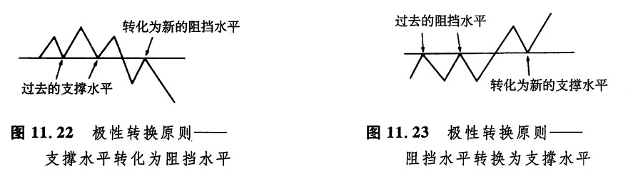
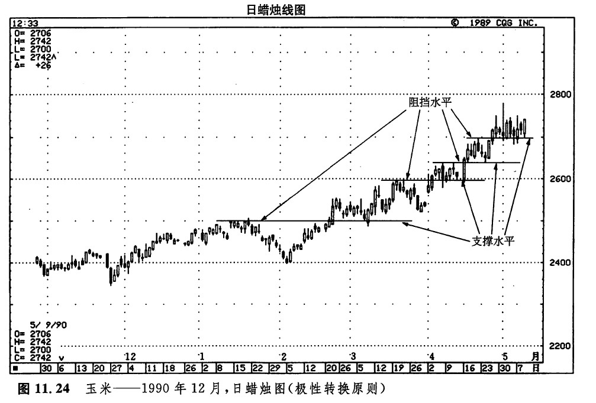
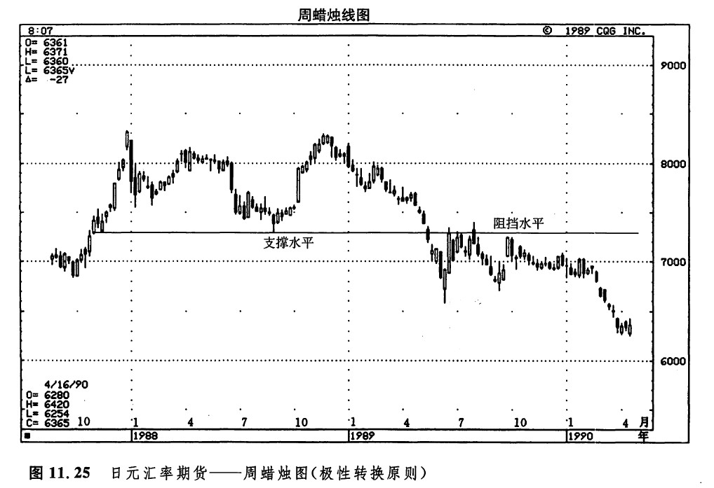
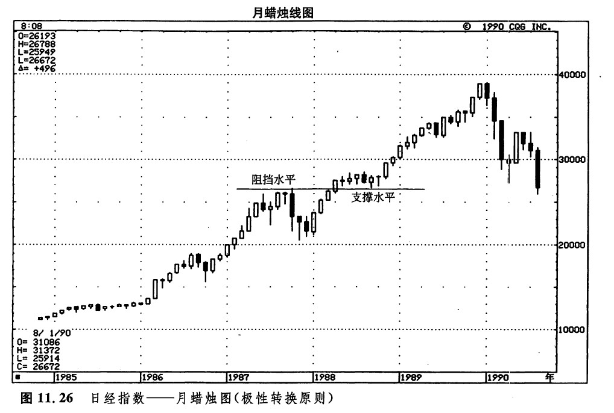
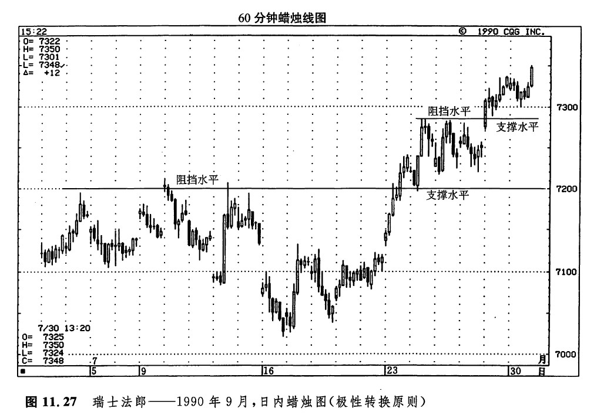
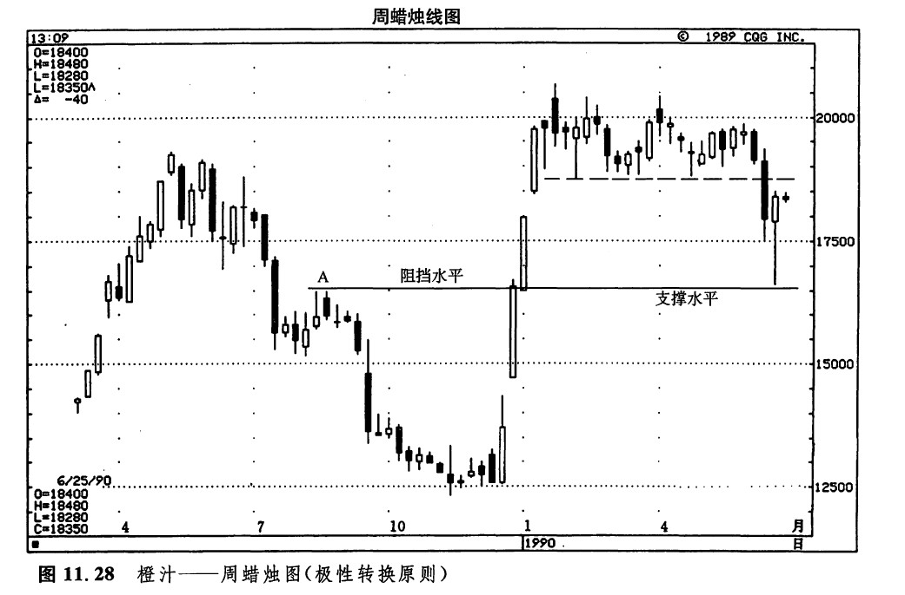
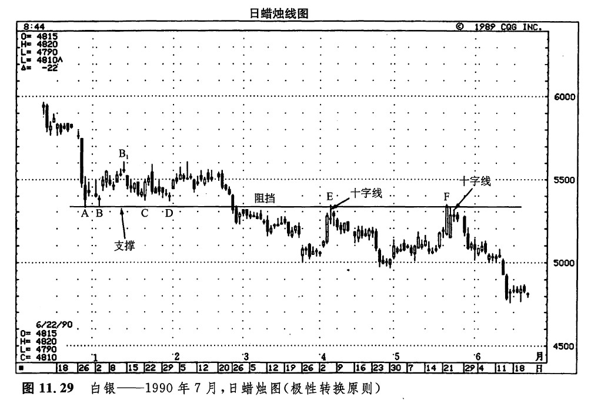
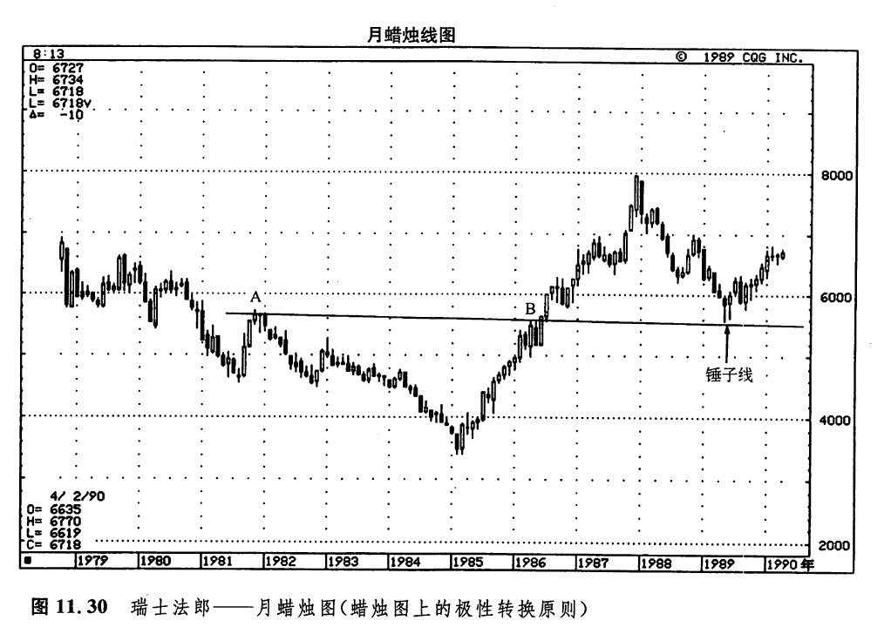
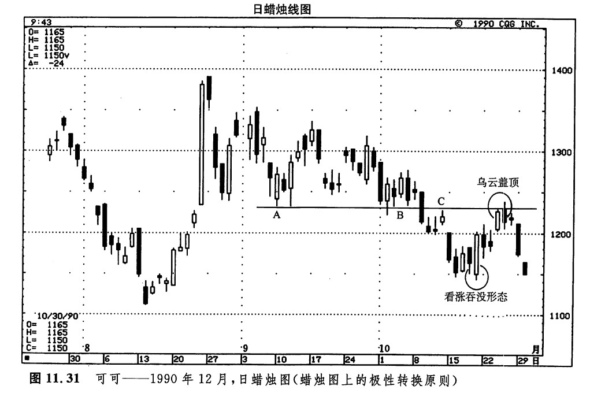

日本人有句谚语：“大红的真漆盘子毋需另加装饰。”这种“简单的就是美好的”的概念，道破了市场技术分析理论的真谛。在蜡烛图表分析的实践中，我常常对这一原则身体力行。这一原则既简单明白，又犀利、得力——过去的支撑水平演化为新的阻挡水平；过去的阻挡水平演化为新的支撑水平。这，就是我所说的“极性转换原则”。图11.22就是支撑水平转化为阻挡水平的情形。图11.23是过去的阻挡水平转化为新的支撑水平的情形。这种极性转换现象的技术潜力的大小，与以下几个方面成正比：

1.市场对过去的支撑／阻挡水平曾进行试探的次数；
2.每次试探时的交易量、持仓量的大小。关于极性转换原则（在传统的用语中，这个概念不是这样描述的），在各种介绍技术分析基础知识的书籍中，都是作为一条基本原理来讨论的。虽然如此，这块技术分析的瑰宝并没有得到充分的重视。为了讲清楚这条规则如何具有普遍适用性、如何能够发挥其良好的功效，下面我们简要地研究一些实例。这些实例既覆盖了不同的市场，也照顾到不同的时间单位。
如图11.24所示，旧的阻挡水平转化为新的支撑水平的情况共有四处。如图11.25所示，1987年底和1988年中的几个低点后来演变成1989年全年的一个重要阻挡区。如图11.26所示，1987年位于27000点附近的阻挡水平一旦被向上突破，就转化成了1988年的一个重要支撑水平。



为了兼顾各种不同的时间尺度（在上述几个实例中，我们已经从日图、周图、月图上看到了这一原则的各种实例），我们还要研究一番日内图表，如图11.27所示。从本图明显可以看出，从7月初到7月中，市场的阻挡水平位于0.72美元。这个0.72美元的水平一旦在7月23日被向上突破，立即转变为支撑水平。而当7月24日和25日的高点0.7290美元被向上突破后，也转化为一个支撑水平。

通过图11.28，我们可以体会到极性转换原则的实用价值。从1989年底到1990年，本市场发生了一轮毫不含糊的上涨行情。1990年上半年，市场一直处于图示的水平波动区间中，其支撑水平如虚线所示，位于1.85美元附近。1990年6月，当这个水平被市场向下突破后，下一个支撑水平在什么地方呢？在1989年底到1990年初的上涨行情中，从1.25美元到2.05美元的价格变化一蹦而就，基本上是直线上升，因此在这段行情中找不到明显的支撑水平。不过，当这里的1.85美元的水平被突破后，我们预期下一个支撑水平在1.65美元附近。我是从何处得出这一数字的呢？有两条理由。第一，上述幅度达0.80美元的上涨行情的50%回撤水平在1.65美元上下。第二，这条理由更加重要，在点A所示的区域，前一个阻挡水平大约也在1.65美元左右。这就意味着现在这里将构成支撑水平。如图所示，一系列跌停板构成了6月的抛售行情。这个抛售行情果然在1.66美元收场。

随意拿起任何一张图表，日内的、逐日的、逐周的，或者更长时间单位的，都极有可能看得到极性转换原则的实例。为什么这一原则既如此筒单、又极其有效呢？追本溯源，其原因在于技术分析之所以成立的根本道理：技术分析估量了交易圈和投资界的人群情绪，研究了市场参与者的群体行为。由此可见，一种技术分析工具越是能够有效地估量市场的群体行为，那么这种技术工具就越是能够发挥市场研究功效。极性转换原则之所以如此成效卓著，正是因为它建立在坚实的市场心理学原理之上。什么样的交易心理学原理呢？这关系到下面两种心理过程：当市场的变化与自己的头寸方向相反时，人们作何反应；当人们判断自己可能会坐失市场运动的良机时，作何反应。
请您自问一下，在您的市场图表上，什么样的价格最重要？是当前趋势的最高价吗？是当前趋势的最低价吗？还是昨日的收市价？都不是。在任何市场上，最重要的价格就是您在开立头寸时的交易水平。人们与自己曾经买进或卖出的价格水平结下了强烈的、切身的、情绪化的不解之缘。
如此一来，在某个价格区域发生的交易活动越多，则越是有更多的市场参与者对这一水平牵扯上深深的情绪。上述心理过程与旧的阻挡水平演变为支撑水平、旧的支撑水平演化为阻挡水平这一事实有什么关系呢？让我们来看一看如图11.29所示的实例，找一找问题的答案。12月下旬，一场陡峭的抛售行情结束于5.53美元的水平（在点A处）。当市场再一次向下试探这个水平的时候，至少有三类市场参与者可能要考虑买进。

第一群市场参与者可能是那些在12月下旬的抛售行情中一直等待市场稳定下来的人。现在，他们发现市场在这里受到了支撑，于是得到了一个入市参考点——5.33美元的水平（点A所示的12月28日的低点）。几天以后，该支撑水平成功地经受住市场的试探，在这个过程中，很可能市场已经吸引了新的多头者加盟。
第二群市场参与者可能是那些原来持有多头头寸、但是在12月下旬的抛售行情中被止损平仓的人。在这些被止损出市的老多头中，当他们看到2月中旬从点B到点B1的上涨行情时，可能有一部分人会觉得当初判断白银市场为牛市是正确的，只不过买进的时机没有选择好。现在，是买进的时候了。他们希望借此机会，证明自己当初的看法是有道理的。于是，等到市场再度向下回落到点C的时候，他们便重新买进，建立多头头寸。
第三群市场参与者可能是那些曾经在A处和B处买进的人。他们也注意到了从B到B1的上涨行情，因此，如果有“合适的”价位，他们就可能为已有的头寸加码。在C处，市场返回了支撑水平，他们自然就得到了一个合适的价位。于是在C处，又出现了更多的买进者。依此类推，当市场再度向下撤回到D处的时候，自然还能吸引更多的多头者入市。
但是不久，多头者的烦恼就开始了。在2月下旬，价格向下突破了A、B、C和D处形成的支撑水平。曾经在这些旧的支撑区域买进的人，现在无一例外地处于亏损状态。他们当然希望以最小的代价来摆脱这些亏损的交易。当市场上冲到这些多头者买进的区域（在5.53美元附近）时，他们谢天谢地，赶紧乘机平回手上的多头头寸。这么一来，当初在A、B、C、D处买进的市场参与者，也许现在就变成了卖出者。这一点，正是过去的支撑水平演化成新的阻挡水平的主要缘由。
在过去的多头中，凡是在3月初较小的上涨行情中没有下决心出清亏损头寸的人，后来就不得不忍受煎熬，眼睁睁看着市场下跌到5美元左右。于是，他们便利用市场的下一轮上涨行情平仓了事，求解脱。这一行情发生在4月初（E处）。图11.29显示了支撑水平是如何转化为阻挡水平的。阻挡水平转化为支撑水平的道理，与上面讨论的内容是一致的，只是方向相反而已。千万不要因为这一原则看似简单，就忽视了它的重要性。这一原则是行之有效的——如果将它与蜡烛图指标综合起来，则尤其得力。我们不妨拿E处的情况作个例子。请注意，这里有一根十字线，它出现在一条高高的白色蜡烛线之后，这就意味着，市场前途不容乐观。这一蜡烛图信号与图示的阻挡线不约而同地出现在同一个位置上。在点F处，市场再度上演了相同的一幕。
如图11.30所示，点A和B所示的高点在1986年底，以及在1989年内转化为一个支撑水平。请注意这条支撑线的力量是如何体现出来的。在1989年的低点处，市场在这个支撑水平上接连形成了两根锤子线。

如图11.31所示，点A和点B分别出现在9月里和10月初，市场在这两处维持了一个位于1230美元上下的支撑水平。10月9日，一旦熊方将市场拖拽到这一水平以下，1230美元附近就转化为一个阻挡区域。在点C处，市场对这个新的阻挡水平的第一次试探失败了，随后价格开始下跌。直至图示的看涨吞没形态出现，这段下跌行情才告一段落。在这个形态之后，跟随着一段小规模的上涨行情。但是，这个上涨行情在1230美元的水平上同样陷入了停顿。此外，市场在这里还形成了一个乌云盖顶形态。

注
[1]科尔比，罗伯特·W和迈耶斯，托马斯·A《市场技术分析指标大全》，道·琼斯一欧文出版公司，1988，第159页。
[2]克罗尔，斯坦利《克罗尔论期货交易》，道·琼斯一欧文出版公司，1988，第20页。
下一篇：第十二章 蜡烛图与百分比回撤水平
上一篇：破低反涨形态与破高反跌形态